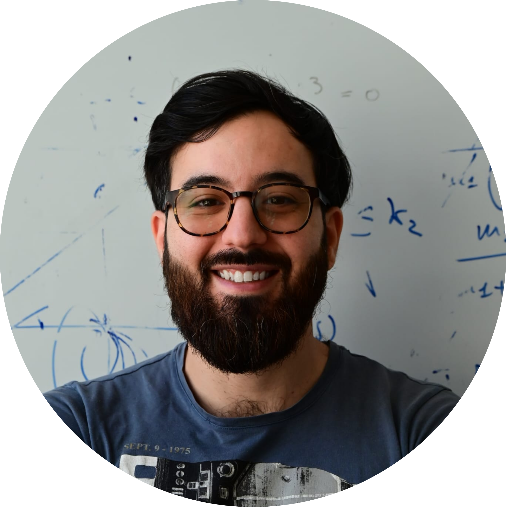

Email: davide.salzano@unina.it
Researcher in automatic control at the University of Naples Federico II.
I work on

I am a researcher at the University of Naples Federico II. I earned a dual-award PhD in 2022 from the University of Naples Federico II and the University of Bristol and have held post-doc roles at Unina and Scuola Superiore Meridionale.
My work focuses on modelling, analysis and control of large-scale complex systems: networked control, coordination of distributed agents, and emergent collective behaviours. Learn more →